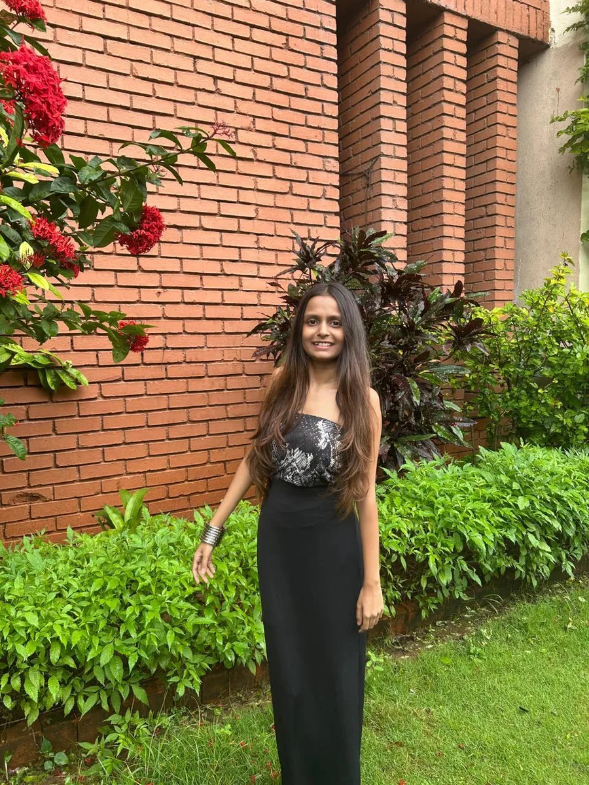
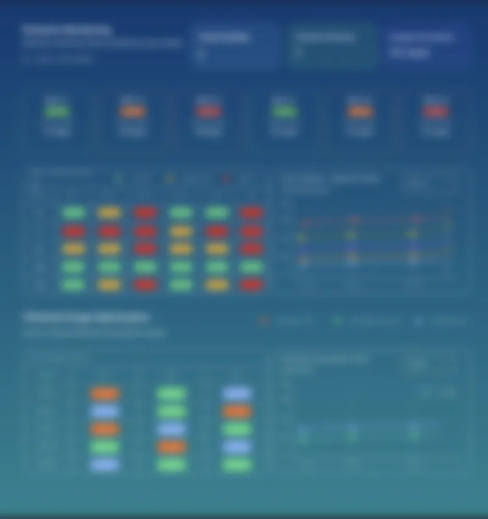
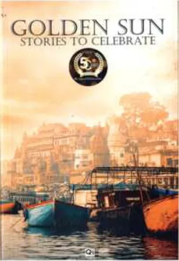
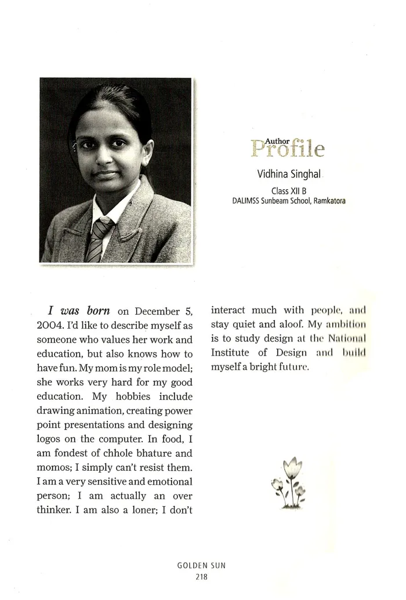
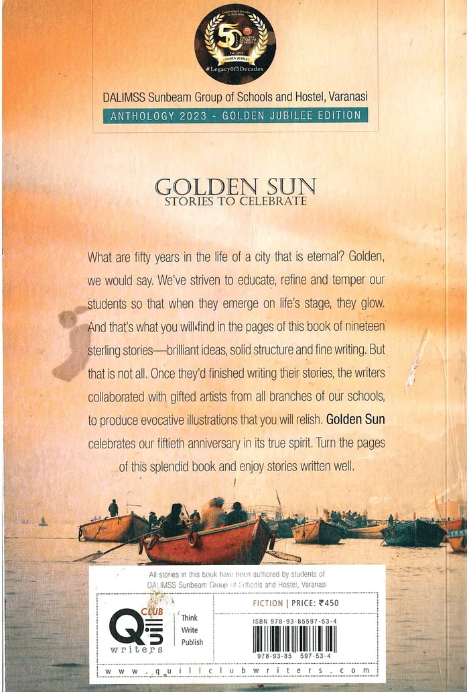
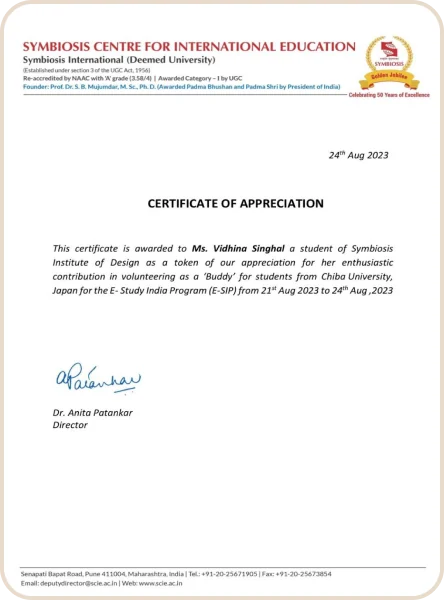
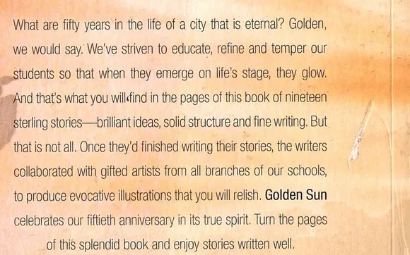

Breathe Safe
How much activity is safe for someone with asthma, today?
- 86.5average SUS, 5 testers
- 6stakeholder interviews
- 12usability issues found
Open to a 6-month UI/UX internship from December 2026
Hi, I’m Vidhina.
I’m a UI/UX designer from Varanasi, studying in Pune. I start where the problem is: a weaver’s workshop, a vendor’s street corner, a conversation with patients and their doctors. What I hear there decides what I design.

Selected work
Each question became a project, and each case study looks different because each world is different. The fourth is client work from my internship, which I can walk you through in person.
How much activity is safe for someone with asthma, today?
Who wove this saree, and how would a buyer ever know?
21 weaving steps documented in a Varanasi workshop
Why does pushing a vegetable cart have to hurt?
6 vendors interviewed, about ₹5,000–6,000 to build
Dashboards and heat maps for a client-facing sustainability product, in light and dark mode, on a reusable Figma component library.
40 dashboard screens and 10 heat maps, approved by the client
Ask for a 1:1 walkthrough
Background
Education

Aug 2023 – May 2027, ongoingB.Des. in UI/UX Design. Graduating May 2027.
8.23SGPA / 10
Experience
May – Jul 2026
Tech Mahindra
Pune
Three habits I bring to every project, each one backed by a case study.
Pune’s street corners with six vendors (with my teammate Nadiya), a weaving workshop in Varanasi, patients and their doctors. Desk research tells me where to look; people tell me what is true.
See the vendor researchFive people tested Breathe Safe. Their 12 issues, and where their eyes went, led to two planned redesigns.
See the testingA health app should feel calm, a silk store should feel woven. Each project gets the look of the people it serves.
See the storefrontAn anthology I wrote for and painted the cover of, a certificate for volunteering, and the course that started it all.
I wrote “Destiny by Design”, one of nineteen stories in this 2023 golden jubilee anthology, and painted its cover, a tribute to the ghats of Varanasi, my hometown.



From Symbiosis Centre for International Education, for volunteering as a buddy to students from Chiba University, Japan, during their E-Study India Program.

The full programme, from research and wireframes to prototyping and usability studies.

A story only works if the reader knows the right thing at the right moment. I order a case study, or a screen, the same way.
They turn a real life into an arc anyone can follow, which is what a good persona or journey map has to do.
It’s how I settle into long design sessions, and a reminder that rhythm and pauses matter on a page too.
I’m looking for a 6-month UI/UX design internship from December 2026. Recruiting for one, or curious about a question above? I reply to every email.
Thanks for scrolling this far. If a question here made you curious, ask me.
Designed by Vidhina Singhal, 2026